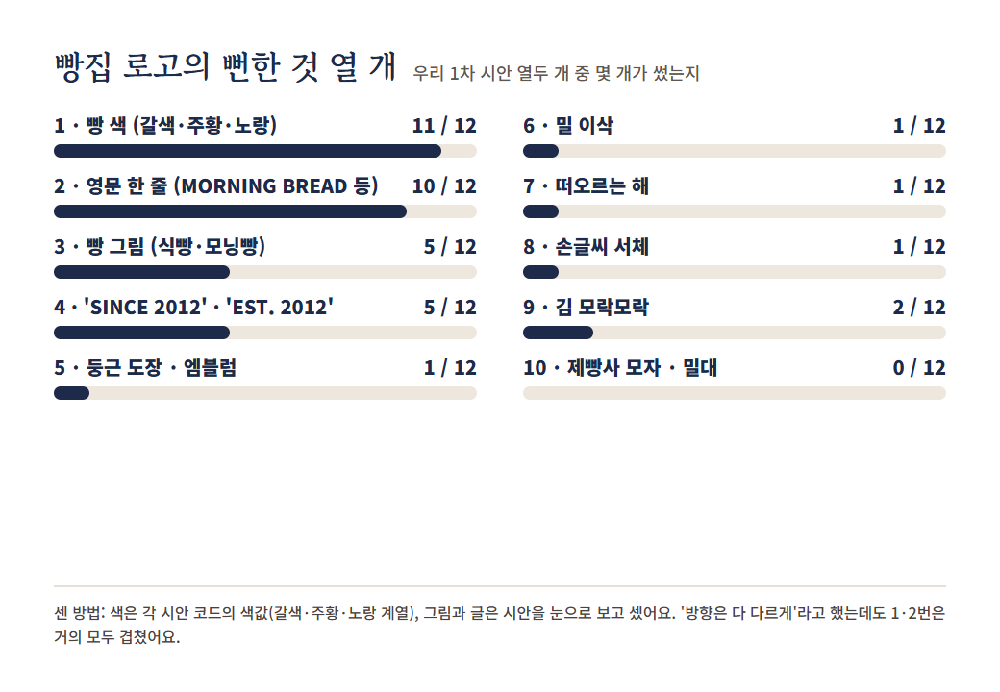
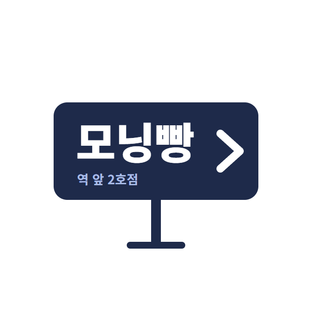
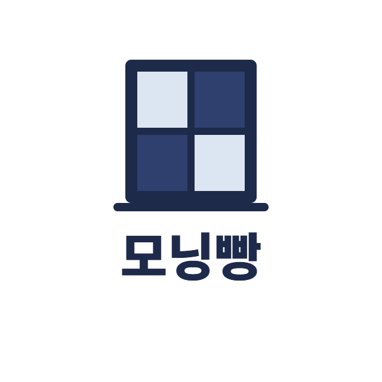
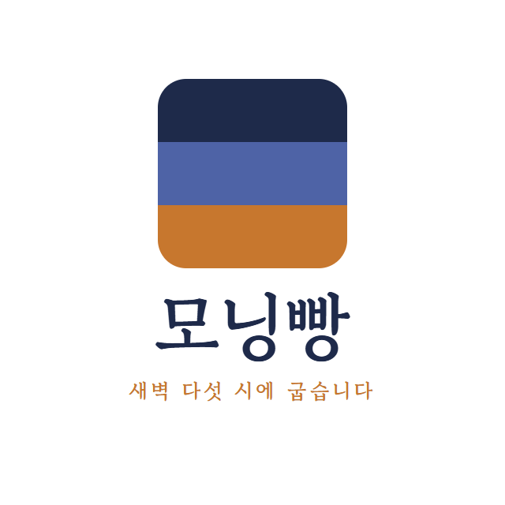

실제 Claude 결과물 · 1차 로고 열두 개
빵 색
11 / 12
영어 한 줄
10 / 12
빵·밀 그림
6 / 12
빵집이면 빵 색이죠!
영어도 한 줄 넣고요!
그럴듯한 = 흔한
Doshi & Hauser · Science Advances (2024)
Generative AI enhances individual creativity but reduces the collective diversity of novel content
↑
AI 아이디어를 받아 쓴 이야기는 더 창의적이고 잘 쓴 글로 평가됐다
↓
하지만 이야기들끼리는
서로 더 비슷해졌다
온라인 실험 · 글쓴이 293명, 평가자 600명
지시: "빵집 로고에서 뻔한 거 열 개, 우리 시안에서 몇 개가 썼는지도"

실제 Claude 결과물
실제 결과 · 뻔한 것 열 개를 다 빼고

버려
보강

버려
지하철 안내판 같아
빵집인지 모르겠어
다 뺀 것
빵 색 하나 남김

맨 아래 띠 하나만 크러스트 갈색으로.
빵 색은 그거 하나만.
실제 결과 · 보강
오늘의 결론
뻔한 걸 알고
골라서 남긴다